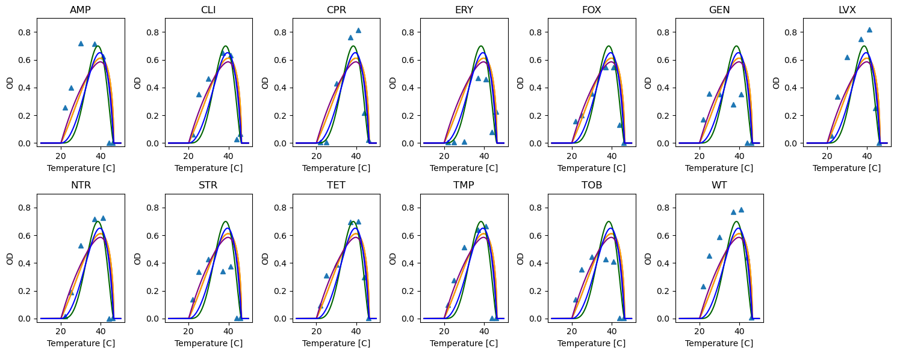
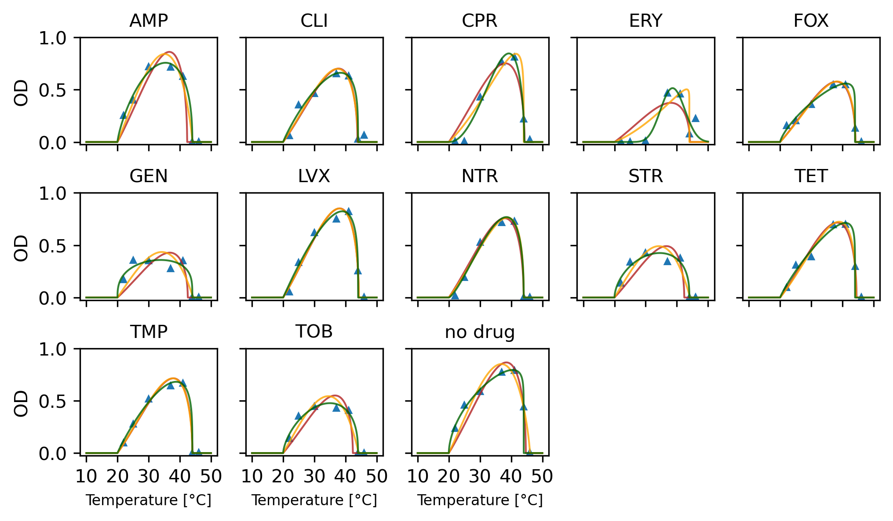
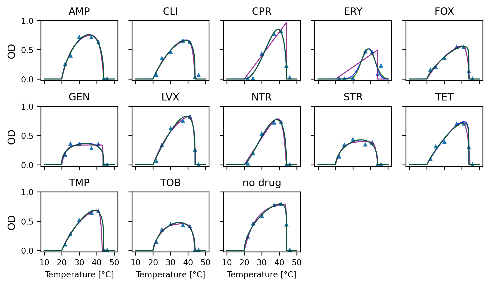

import numpy as np
import pandas as pd
import random
random.seed(42)
from matplotlib import pyplot as plt
from scipy.optimize import minimize
from sklearn.model_selection import LeaveOneOutModel comparison on antibiotic dataset
def briere1(T, Tmin=10.0, Tmax=50.0, c=1.0):
result = np.zeros(len(T))
cond = (Tmin < T) & (T < Tmax)
result[cond] = c * T[cond] * np.exp(np.log(T[cond] - Tmin) + 0.5 * np.log(Tmax - T[cond]))
return result
def briere2(T, Tmin=10.0, Tmax=50.0, c=1.0, b=2.0):
result = np.zeros(len(T))
cond = (Tmin < T) & (T < Tmax)
result[cond] = c * T[cond] * np.exp(np.log(T[cond] - Tmin) + np.log(Tmax - T[cond]) / b)
return result
# Fully biologically interpretable parametrization of flexTPC model
def flexTPC(T, Tmin=10.0, Tmax=50.0, rmax=1.0, α=0.8, β=0.2):
result = np.zeros(len(T))
cond = (Tmin < T) & (T < Tmax)
s = α * (1.0 - α) / β**2
result[cond] = rmax * np.exp(s * (α * (np.log(T[cond] - Tmin) - np.log(α)) +
(1 - α) * (np.log(Tmax - T[cond]) - np.log(1 - α) )
- np.log(Tmax - Tmin)))
return result
# Exponential product curve.
def expprodcurve(T, Tmin=10.0, Tmax=50.0, c=1.0, kI=0.1, kU=0.5):
result = np.zeros(len(T))
cond = (Tmin < T) & (T < Tmax)
result[cond] = c * (1.0 - np.exp(-kI*(T[cond] - Tmin))) * (1.0 - np.exp(-kU*(Tmax - T[cond])))
return result
# Kumaraswarmy distribution TPC.
def kumaraswarmy(T, Tmin=10.0, Tmax=50.0, c=1.0, a=5.0, b=5.0):
result = np.zeros(len(T))
cond = (Tmin < T) & (T < Tmax)
τ = (T[cond] - Tmin) / (Tmax - Tmin)
result[cond] = c * τ**(a - 1) * (1.0 - τ**a)**(b - 1)
return resultdef nloglik2(θ, Tdata, rdata, model=flexTPC):
params, σ2 = θ[:-1], θ[-1]
Tmin, Tmax = θ[:2]
#outside = (Tdata < Tmin) | (Tdata > Tmax)
n = len(rdata)
return 0.5 * (n * np.log(2*np.pi*σ2) + np.sum((rdata - model(Tdata, *params))**2 / σ2))
def AIC(nll, p):
return 2 * nll + 2 * p
def BIC(nll, n, p):
return 2 * nll + p * np.log(n)E. coli antibiotics dataset
abcoli = pd.read_csv("ab_data.csv")
single = abcoli[(abcoli["drug2name"] == "WT")]
drugs = ['AMP',
'CLI',
'CPR',
'ERY',
'FOX',
'GEN',
'LVX',
'NTR',
'STR',
'TET',
'TMP',
'TOB',
'WT']drugs['AMP',
'CLI',
'CPR',
'ERY',
'FOX',
'GEN',
'LVX',
'NTR',
'STR',
'TET',
'TMP',
'TOB',
'WT']single| drug1name | drug2name | drug1num | drug2num | T | t | sample | OD | |
|---|---|---|---|---|---|---|---|---|
| 28 | NTR | WT | 8.0 | 13.0 | 37.0 | 24.0 | 1.0 | 0.6244 |
| 29 | NTR | WT | 8.0 | 13.0 | 37.0 | 24.0 | 2.0 | 0.6865 |
| 30 | NTR | WT | 8.0 | 13.0 | 37.0 | 24.0 | 3.0 | 0.7640 |
| 31 | NTR | WT | 8.0 | 13.0 | 37.0 | 24.0 | 4.0 | 0.7984 |
| 32 | NTR | WT | 8.0 | 13.0 | 22.0 | 24.0 | 1.0 | 0.0139 |
| ... | ... | ... | ... | ... | ... | ... | ... | ... |
| 1927 | TET | WT | 10.0 | 13.0 | 44.0 | 24.0 | 4.0 | 0.3349 |
| 1928 | TET | WT | 10.0 | 13.0 | 30.0 | 24.0 | 1.0 | 0.3772 |
| 1929 | TET | WT | 10.0 | 13.0 | 30.0 | 24.0 | 2.0 | 0.3865 |
| 1930 | TET | WT | 10.0 | 13.0 | 30.0 | 24.0 | 3.0 | 0.3883 |
| 1931 | TET | WT | 10.0 | 13.0 | 30.0 | 24.0 | 4.0 | 0.4085 |
364 rows × 8 columns
abdata = single.groupby(["drug1name", "T"], as_index=False).agg({'OD':'mean'})
#Set low values to zero
#abdata["OD"][abdata["OD"] < 0.02] = 0.0abdata[abdata["OD"] < 0.0]| drug1name | T | OD |
|---|
abdata[abdata["drug1name"] == "AMP"]| drug1name | T | OD | |
|---|---|---|---|
| 0 | AMP | 22.0 | 0.255500 |
| 1 | AMP | 25.0 | 0.399700 |
| 2 | AMP | 30.0 | 0.717800 |
| 3 | AMP | 37.0 | 0.713775 |
| 4 | AMP | 41.0 | 0.625300 |
| 5 | AMP | 44.0 | 0.001950 |
| 6 | AMP | 46.0 | 0.002450 |
def nloglikab(θ, Tdata, rdata, model=flexTPC):
params, σ2 = θ[:-1], θ[-1]
Tmin, Tmax = θ[:2]
return 0.5 * (len(rdata) * np.log(2*np.pi*σ2) + np.sum((rdata
- model(Tdata, *params))**2 / σ2))#initial_mb["GEN"] = [20.0, 46.5, 0.5, 0.7, 2.0, 0.005]
#initial_mb["STR"] = [20.0, 46.5, 0.5, 0.7, 2.0, 0.005]
#initial_mb["TOB"] = [20.0, 46.5, 0.5, 0.7, 2.0, 0.005]
#initial_mb["ERY"] = [20.0, 46.5, 0.5, 0.7, 4.0, 0.005]
#initial_mb["AMP"] = [15.0, 46.5, 0.7, 0.7, 2.0, 0.005]
initial_b1 = {drug:[20.0, 46.5, 3e-4, 0.005] for drug in drugs}
initial_b2 = {drug:[20.0, 46.5, 3e-4, 2.0, 0.005] for drug in drugs}
initial_flex = {drug:[20.0, 46.5, 0.7, 0.7, 0.2, 0.005] for drug in drugs}
initial_epc = {drug:[20.0, 46.5, 1.0, 0.05, 0.4, 0.005] for drug in drugs}
initial_kum = {drug:[20.0, 46.5, 2.0, 3, 2, 0.005] for drug in drugs}loo = LeaveOneOut()
loo.get_n_splits(abdata["T"][abdata["drug1name"] == "WT"])7initial_flex{'AMP': [20.0, 46.5, 0.7, 0.7, 0.2, 0.005],
'CLI': [20.0, 46.5, 0.7, 0.7, 0.2, 0.005],
'CPR': [20.0, 46.5, 0.7, 0.7, 0.2, 0.005],
'ERY': [20.0, 46.5, 0.7, 0.7, 0.2, 0.005],
'FOX': [20.0, 46.5, 0.7, 0.7, 0.2, 0.005],
'GEN': [20.0, 46.5, 0.7, 0.7, 0.2, 0.005],
'LVX': [20.0, 46.5, 0.7, 0.7, 0.2, 0.005],
'NTR': [20.0, 46.5, 0.7, 0.7, 0.2, 0.005],
'STR': [20.0, 46.5, 0.7, 0.7, 0.2, 0.005],
'TET': [20.0, 46.5, 0.7, 0.7, 0.2, 0.005],
'TMP': [20.0, 46.5, 0.7, 0.7, 0.2, 0.005],
'TOB': [20.0, 46.5, 0.7, 0.7, 0.2, 0.005],
'WT': [20.0, 46.5, 0.7, 0.7, 0.2, 0.005]}T = np.arange(10, 50, 0.001)
plt.figure(figsize=(15, 6))
for i, drug in enumerate(drugs):
subset = abdata[abdata["drug1name"] == drug]
plt.subplot(2, 7, i+1)
# Plot datapoints.
Tdata = subset["T"]
rdata = subset["OD"]
plt.plot(Tdata, rdata, '^')
# Plot initial parameters curves by Briere.
par = initial_b1[drug]
plt.plot(T, briere1(T, *par[:-1]), color="firebrick")
par = initial_b2[drug]
plt.plot(T, briere2(T, *par[:-1]), color="orange")
par = initial_flex[drug]
plt.plot(T, flexTPC(T, *par[:-1]), color="darkgreen")
par = initial_epc[drug]
plt.plot(T, expprodcurve(T, *par[:-1]), color="purple")
par = initial_kum[drug]
plt.plot(T, kumaraswarmy(T, *par[:-1]), color="blue")
plt.ylim(-0.025, 0.9)
plt.xlabel("Temperature [C]")
plt.ylabel("OD", fontsize=10)
plt.title(drug)
plt.tight_layout()
# LOOCV
params = {"flexTPC":{}, "b1":{}, "b2":{}, "epc":{}, "kum":{}}
models = ["b1", "b2", "flexTPC", "epc", "kum"]
loocv_nll = {model:{drug:[] for drug in drugs } for model in models}
method = "Nelder-Mead"
for i, drug in enumerate(drugs):
subset = abdata[abdata["drug1name"] == drug]
Tdata = np.array(subset["T"])
rdata = np.array(subset["OD"])
print(drug)
print("numsplits:", loo.get_n_splits(Tdata))
for train, test in loo.split(Tdata):
T_train, r_train = Tdata[train], rdata[train]
T_test, r_test = Tdata[test], rdata[test]
params["b1"][drug] = minimize(nloglikab, initial_b1[drug],
bounds=[(0.0, 20.0),
(30.0, 60.0),
(0.0, 10.0),
(0, 0.01)],
args=(Tdata, rdata, briere1), options={"maxiter":100000}, method=method)
θ = params["b1"][drug]["x"]
loocv_nll["b1"][drug].append(nloglikab(θ, T_test, r_test, model=briere1))
params["b2"][drug] = minimize(nloglikab, initial_b2[drug],
bounds=[(0.0, 20.0),
(30.0, 60.0),
(0.0, 10.0),
(1.0, 20.0),
(0, 0.01)],
args=(Tdata, rdata, briere2), options={"maxiter":100000}, method=method)
θ = params["b2"][drug]["x"]
loocv_nll["b2"][drug].append(nloglikab(θ, T_test, r_test, model=briere2))
params["flexTPC"][drug] = minimize(nloglikab, initial_flex[drug], #Check nloglikab vs nloglok
bounds=[(0.0, 20.0),
(30.0, 60.0),
(0.0, 1.0),
(0.1, 0.95),
(0.0, 2.0),
(0, 0.01)],
args=(Tdata, rdata), options={"maxiter":100000}, method=method)
θ = params["flexTPC"][drug]["x"]
loocv_nll["flexTPC"][drug].append(nloglikab(θ, T_test, r_test, model=flexTPC))
params["epc"][drug] = minimize(nloglikab, initial_epc[drug],
bounds=[(0.0, 20.0),
(30.0, 60.0),
(0.0, np.inf),
(0.0, np.inf),
(0.0, np.inf),
(0, 1.0)],
args=(Tdata, rdata, expprodcurve), options={"maxiter":100000}, method=method)
θ = params["epc"][drug]["x"]
loocv_nll["epc"][drug].append(nloglikab(θ, T_test, r_test, model=expprodcurve))
params["kum"][drug] = minimize(nloglikab, initial_kum[drug],
bounds=[(0.0, 20.0),
(30.0, 60.0),
(0.0, np.inf),
(1.0, np.inf),
(1.0, np.inf),
(0, 1.0)],
args=(Tdata, rdata, kumaraswarmy), options={"maxiter":100000}, method=method)
θ = params["kum"][drug]["x"]
loocv_nll["kum"][drug].append(nloglikab(θ, T_test, r_test, model=kumaraswarmy))AMP
numsplits: 7
CLI
numsplits: 7
CPR
numsplits: 7
ERY
numsplits: 7
FOX
numsplits: 7/var/folders/g8/wjqhnz1n01d5l4pdv8cnykw40000gp/T/ipykernel_90204/1310441239.py:4: RuntimeWarning: divide by zero encountered in log
return 0.5 * (len(rdata) * np.log(2*np.pi*σ2) + np.sum((rdata
/var/folders/g8/wjqhnz1n01d5l4pdv8cnykw40000gp/T/ipykernel_90204/1310441239.py:4: RuntimeWarning: divide by zero encountered in divide
return 0.5 * (len(rdata) * np.log(2*np.pi*σ2) + np.sum((rdata
/var/folders/g8/wjqhnz1n01d5l4pdv8cnykw40000gp/T/ipykernel_90204/1310441239.py:4: RuntimeWarning: invalid value encountered in scalar add
return 0.5 * (len(rdata) * np.log(2*np.pi*σ2) + np.sum((rdataGEN
numsplits: 7
LVX
numsplits: 7
NTR
numsplits: 7
STR
numsplits: 7
TET
numsplits: 7
TMP
numsplits: 7
TOB
numsplits: 7
WT
numsplits: 7params = {"flexTPC":{}, "b1":{}, "b2":{}, "epc":{}, "kum":{}}
models = ["b1", "b2", "flexTPC", "epc", "kum"]
method = "Nelder-Mead"
for i, drug in enumerate(drugs):
subset = abdata[abdata["drug1name"] == drug]
Tdata = np.array(subset["T"])
rdata = np.array(subset["OD"])
params["b1"][drug] = minimize(nloglikab, initial_b1[drug],
bounds=[(0.0, 20.0),
(30.0, 60.0),
(0.0, 10.0),
(0, 0.01)],
args=(Tdata, rdata, briere1), options={"maxiter":100000}, method=method)
params["b2"][drug] = minimize(nloglikab, initial_b2[drug],
bounds=[(0.0, 20.0),
(30.0, 60.0),
(0.0, 10.0),
(1.0, 20.0),
(0, 0.01)],
args=(Tdata, rdata, briere2), options={"maxiter":100000}, method=method)
params["flexTPC"][drug] = minimize(nloglikab, initial_flex[drug], #nloglikab vs nloglok
bounds=[(0.0, 20.0),
(30.0, 60.0),
(0.0, 1.0),
(0.1, 0.95),
(0.0, 2.0),
(0, 0.01)],
args=(Tdata, rdata), options={"maxiter":100000}, method=method)
params["epc"][drug] = minimize(nloglikab, initial_epc[drug],
bounds=[(0.0, 20.0),
(30.0, 60.0),
(0.0, np.inf),
(0.0, np.inf),
(0.0, np.inf),
(0, 1.0)],
args=(Tdata, rdata, expprodcurve), options={"maxiter":100000}, method=method)
params["kum"][drug] = minimize(nloglikab, initial_kum[drug],
bounds=[(0.0, 20.0),
(30.0, 60.0),
(0.0, np.inf),
(1.0, np.inf),
(1.0, np.inf),
(0, 1.0)],
args=(Tdata, rdata, kumaraswarmy), options={"maxiter":100000}, method=method)/var/folders/g8/wjqhnz1n01d5l4pdv8cnykw40000gp/T/ipykernel_90204/1310441239.py:4: RuntimeWarning: divide by zero encountered in log
return 0.5 * (len(rdata) * np.log(2*np.pi*σ2) + np.sum((rdata
/var/folders/g8/wjqhnz1n01d5l4pdv8cnykw40000gp/T/ipykernel_90204/1310441239.py:4: RuntimeWarning: divide by zero encountered in divide
return 0.5 * (len(rdata) * np.log(2*np.pi*σ2) + np.sum((rdata
/var/folders/g8/wjqhnz1n01d5l4pdv8cnykw40000gp/T/ipykernel_90204/1310441239.py:4: RuntimeWarning: invalid value encountered in scalar add
return 0.5 * (len(rdata) * np.log(2*np.pi*σ2) + np.sum((rdataT = np.arange(10, 50, 0.001)
fig, axarr = plt.subplots(3, 5, figsize=(6.81102, 4), dpi=300, sharex=True, sharey=True)
plt.rcParams.update({'font.size': 8})
for i, drug in enumerate(drugs):
ax = axarr[i // 5, i % 5]
subset = abdata[abdata["drug1name"] == drug]
ax.set_xticks([10, 20, 30, 40, 50])
ax.set_yticks([0, 0.5, 1])
#plt.subplot(3, 5, i+1)
# Plot datapoints.
Tdata = subset["T"]
rdata = subset["OD"]
ax.plot(Tdata, rdata, '^', markersize=3)
# Plot fitted curves by Briere.
par = params["b1"][drug]["x"]
ax.plot(T, briere1(T, *par[:-1]), color="firebrick", linewidth=1, alpha=0.8)
par = params["b2"][drug]["x"]
ax.plot(T, briere2(T, *par[:-1]), color="orange", linewidth=1, alpha=0.8)
par = params["flexTPC"][drug]["x"]
ax.plot(T, flexTPC(T, *par[:-1]), color="darkgreen", linewidth=1, alpha=0.8)
#par = params["epc"][drug]["x"]
#ax.plot(T, expprodcurve(T, *par[:-1]), color="purple", linewidth=1, alpha=0.8)
#par = params["kum"][drug]["x"]
#ax.plot(T, kumaraswarmy(T, *par[:-1]), color="blue", linewidth=1, alpha=0.8)
ax.set_ylim(-0.025, 1.0)
if drug != 'WT':
ax.set_title(drug, fontsize=10)
else:
ax.set_title('no drug', fontsize=10)
if drug in ("TMP", "TOB", "WT"):
ax.set_xlabel("Temperature [°C]", fontsize=8)
if drug in ("AMP", "GEN", "TMP"):
ax.set_ylabel("OD", fontsize=10)
axarr[-1, -1].axis("off")
axarr[-1, -2].axis("off")
#ERY
#rect = plt.Rectangle(
# # (lower-left corner), width, height
# (0.63, 0.69), 0.18, 0.29, fill=False, color="k", lw=1.5,
# zorder=1000, transform=fig.transFigure, figure=fig
# )
#GEN
#rect2 = plt.Rectangle(
# # (lower-left corner), width, height
# (0.04, 0.4), 0.22, 0.29, fill=False, color="k", lw=1.5,
# zorder=1000, transform=fig.transFigure, figure=fig
# )
#fig.patches.extend([rect, rect2])
plt.tight_layout()
plt.savefig("abcoli.svg")
plt.savefig("abcoli.pdf")
plt.savefig("abcoli.png")
T = np.arange(10, 50, 0.001)
fig, axarr = plt.subplots(3, 5, figsize=(6.81102, 4), dpi=300, sharex=True, sharey=True)
plt.rcParams.update({'font.size': 8})
for i, drug in enumerate(drugs):
ax = axarr[i // 5, i % 5]
subset = abdata[abdata["drug1name"] == drug]
ax.set_xticks([10, 20, 30, 40, 50])
ax.set_yticks([0, 0.5, 1])
#plt.subplot(3, 5, i+1)
# Plot datapoints.
Tdata = subset["T"]
rdata = subset["OD"]
ax.plot(Tdata, rdata, '^', markersize=3)
par = params["epc"][drug]["x"]
ax.plot(T, expprodcurve(T, *par[:-1]), color="purple", linewidth=1, alpha=0.8)
par = params["kum"][drug]["x"]
ax.plot(T, kumaraswarmy(T, *par[:-1]), color="blue", linewidth=1, alpha=0.8)
par = params["flexTPC"][drug]["x"]
ax.plot(T, flexTPC(T, *par[:-1]), color="darkgreen", linewidth=1, alpha=0.8)
ax.set_ylim(-0.025, 1.0)
if drug != 'WT':
ax.set_title(drug, fontsize=10)
else:
ax.set_title('no drug', fontsize=10)
if drug in ("TMP", "TOB", "WT"):
ax.set_xlabel("Temperature [°C]", fontsize=8)
if drug in ("AMP", "GEN", "TMP"):
ax.set_ylabel("OD", fontsize=10)
axarr[-1, -1].axis("off")
axarr[-1, -2].axis("off")
#ERY
#rect = plt.Rectangle(
# # (lower-left corner), width, height
# (0.63, 0.69), 0.18, 0.29, fill=False, color="k", lw=1.5,
# zorder=1000, transform=fig.transFigure, figure=fig
# )
#GEN
#rect2 = plt.Rectangle(
# # (lower-left corner), width, height
# (0.04, 0.4), 0.22, 0.29, fill=False, color="k", lw=1.5,
# zorder=1000, transform=fig.transFigure, figure=fig
# )
#fig.patches.extend([rect, rect2])
plt.tight_layout()
plt.savefig("abcoli_pc_kum.svg")
plt.savefig("abcoli_pc_kum.pdf")
plt.savefig("abcoli_pc_kum.png")
n_params = {'b1':4, 'b2':5, 'flexTPC':6, 'epc':6, 'kum':6} # Includes standard deviation.
param_matrix = {model:np.zeros((13, n_params[model])) for model in models}
for model in models:
for i, drug in enumerate(drugs):
param_matrix[model][i, ] = params[model][drug]["x"]
colnames = {'b1':['Tmin', 'Tmax', 'c', 'sigma2'],
'b2':['Tmin', 'Tmax', 'c', 'm', 'sigma2'],
'flexTPC':['Tmin', 'Tmax', 'rmax', 'alpha', 'beta', 'sigma2'],
'epc':['Tmin', 'Tmax', 'c', 'kI', 'kU', 'sigma2'],
'kum':['Tmin', 'Tmax', 'c', 'a', 'b', 'sigma2']}
param_df = {model:pd.DataFrame(param_matrix[model], columns=colnames[model]) for model in models}
for model in models:
param_df[model]['drug'] = drugs
param_df[model] = param_df[model][['drug'] + colnames[model]]
param_df[model].to_csv(f'abcoli_params_{model}.csv', index=False)param_df['epc']| drug | Tmin | Tmax | c | kI | kU | sigma2 | |
|---|---|---|---|---|---|---|---|
| 0 | AMP | 20.0 | 44.007843 | 0.824156 | 1.614674e-01 | 0.493304 | 0.001229 |
| 1 | CLI | 20.0 | 44.054805 | 0.866008 | 8.242660e-02 | 0.713136 | 0.001949 |
| 2 | CPR | 20.0 | 44.000001 | 71240.939870 | 5.623456e-07 | 180349.336808 | 0.007429 |
| 3 | ERY | 20.0 | 44.000002 | 138202.531337 | 1.494974e-07 | 95836.460775 | 0.016318 |
| 4 | FOX | 20.0 | 44.322608 | 0.850540 | 5.915439e-02 | 0.712125 | 0.000682 |
| 5 | GEN | 20.0 | 43.586791 | 0.336935 | 4.717883e-01 | 13.322271 | 0.001133 |
| 6 | LVX | 20.0 | 44.356000 | 1.096169 | 7.229880e-02 | 0.930030 | 0.001773 |
| 7 | NTR | 20.0 | 44.005670 | 1665.495450 | 2.757200e-05 | 0.455426 | 0.001853 |
| 8 | STR | 20.0 | 44.010421 | 0.397158 | 3.059134e-01 | 0.961540 | 0.001156 |
| 9 | TET | 20.0 | 44.694587 | 1.443680 | 3.744536e-02 | 0.612516 | 0.001204 |
| 10 | TMP | 20.0 | 43.175693 | 0.890553 | 7.821355e-02 | 1.202987 | 0.000335 |
| 11 | TOB | 20.0 | 44.008580 | 0.464558 | 2.443800e-01 | 0.697478 | 0.000537 |
| 12 | WT | 20.0 | 44.106355 | 0.815505 | 1.522118e-01 | 7.663247 | 0.000530 |
nll = np.zeros((len(drugs), len(models)))
aic = np.zeros((len(drugs), len(models)))
bic = np.zeros((len(drugs), len(models)))
loo_nll = np.zeros((len(drugs), len(models)))
p = [4, 5, 6, 6, 6] # Number of parameters.
n = 7 # Number of datapoints.
for i, d in enumerate(drugs):
for j, m in enumerate(models):
nll[i, j] = params[m][d]["fun"]
aic[i, j] = AIC(nll[i, j], p[j])
bic[i, j] = BIC(nll[i, j], n, p[j])
loo_nll[i, j] = np.mean(loocv_nll[m][d])drugs['AMP',
'CLI',
'CPR',
'ERY',
'FOX',
'GEN',
'LVX',
'NTR',
'STR',
'TET',
'TMP',
'TOB',
'WT']for drug in drugs:
print(drug, np.round(params["flexTPC"][drug]["x"], 3) )AMP [2.00e+01 4.40e+01 7.57e-01 6.42e-01 4.38e-01 1.00e-03]
CLI [2.00e+01 4.40e+01 6.61e-01 7.65e-01 3.87e-01 2.00e-03]
CPR [2.0000e+01 4.4195e+01 8.4600e-01 7.9500e-01 2.4300e-01 2.0000e-03]
ERY [2.00e+01 6.00e+01 5.15e-01 4.66e-01 9.70e-02 5.00e-03]
FOX [2.00e+01 4.40e+01 5.59e-01 8.80e-01 3.52e-01 1.00e-03]
GEN [2.00e+01 4.40e+01 3.59e-01 5.75e-01 6.18e-01 2.00e-03]
LVX [2.0000e+01 4.4026e+01 8.2400e-01 7.8800e-01 3.6300e-01 2.0000e-03]
NTR [2.00e+01 4.40e+01 7.69e-01 7.69e-01 3.14e-01 1.00e-03]
STR [2.00e+01 4.40e+01 4.25e-01 6.04e-01 5.01e-01 2.00e-03]
TET [2.0000e+01 4.4001e+01 7.1300e-01 8.7200e-01 3.3100e-01 1.0000e-03]
TMP [20. 44. 0.681 0.782 0.377 0. ]
TOB [2.00e+01 4.40e+01 4.77e-01 6.24e-01 4.73e-01 1.00e-03]
WT [20. 44.003 0.794 0.853 0.437 0. ]dfAIC = pd.DataFrame(np.round(aic, 2), columns=models, index=drugs)
dfBIC = pd.DataFrame(np.round(bic, 2), columns=models, index=drugs)
dfLOOCV = pd.DataFrame(np.round(loo_nll, 2), columns=models, index=drugs)dfAIC| b1 | b2 | flexTPC | epc | kum | |
|---|---|---|---|---|---|
| AMP | -5.56 | -8.64 | -17.12 | -15.04 | -16.95 |
| CLI | -11.98 | -10.51 | -11.38 | -11.82 | -11.20 |
| CPR | -2.92 | -7.16 | -11.75 | -2.45 | -11.03 |
| ERY | 3.28 | 0.25 | -4.95 | 3.06 | -3.54 |
| FOX | -18.14 | -16.31 | -21.11 | -19.17 | -21.33 |
| GEN | -3.16 | -3.96 | -11.56 | -15.61 | -5.99 |
| LVX | -12.93 | -10.96 | -12.43 | -12.48 | -11.90 |
| NTR | -16.03 | -16.47 | -17.42 | -12.17 | -16.31 |
| STR | -5.39 | -7.42 | -12.87 | -15.47 | -12.54 |
| TET | -15.07 | -13.83 | -14.88 | -15.19 | -10.33 |
| TMP | -18.63 | -16.74 | -24.29 | -24.14 | -23.32 |
| TOB | -7.15 | -9.40 | -17.35 | -20.84 | -16.76 |
| WT | -5.49 | -6.43 | -25.33 | -20.93 | -25.23 |
dfBIC| b1 | b2 | flexTPC | epc | kum | |
|---|---|---|---|---|---|
| AMP | -5.78 | -8.91 | -17.45 | -15.37 | -17.27 |
| CLI | -12.19 | -10.78 | -11.70 | -12.14 | -11.52 |
| CPR | -3.14 | -7.43 | -12.07 | -2.77 | -11.35 |
| ERY | 3.07 | -0.02 | -5.27 | 2.73 | -3.87 |
| FOX | -18.35 | -16.58 | -21.43 | -19.49 | -21.66 |
| GEN | -3.38 | -4.23 | -11.88 | -15.94 | -6.31 |
| LVX | -13.15 | -11.23 | -12.75 | -12.81 | -12.22 |
| NTR | -16.25 | -16.74 | -17.74 | -12.49 | -16.64 |
| STR | -5.61 | -7.69 | -13.19 | -15.80 | -12.87 |
| TET | -15.28 | -14.10 | -15.20 | -15.51 | -10.65 |
| TMP | -18.85 | -17.01 | -24.61 | -24.47 | -23.64 |
| TOB | -7.37 | -9.67 | -17.68 | -21.16 | -17.09 |
| WT | -5.70 | -6.70 | -25.65 | -21.26 | -25.56 |
dfLOOCV| b1 | b2 | flexTPC | epc | kum | |
|---|---|---|---|---|---|
| AMP | -0.97 | -1.33 | -2.08 | -1.93 | -2.07 |
| CLI | -1.43 | -1.47 | -1.67 | -1.70 | -1.66 |
| CPR | -0.78 | -1.23 | -1.70 | -1.03 | -1.64 |
| ERY | -0.34 | -0.70 | -1.21 | -0.64 | -1.11 |
| FOX | -1.87 | -1.88 | -2.36 | -2.23 | -2.38 |
| GEN | -0.80 | -1.00 | -1.68 | -1.97 | -1.28 |
| LVX | -1.50 | -1.50 | -1.74 | -1.75 | -1.71 |
| NTR | -1.72 | -1.89 | -2.10 | -1.73 | -2.02 |
| STR | -0.96 | -1.24 | -1.78 | -1.96 | -1.75 |
| TET | -1.65 | -1.70 | -1.92 | -1.94 | -1.59 |
| TMP | -1.90 | -1.91 | -2.59 | -2.58 | -2.52 |
| TOB | -1.08 | -1.39 | -2.10 | -2.35 | -2.05 |
| WT | -0.96 | -1.17 | -2.67 | -2.35 | -2.66 |
def get_delta(df):
'''
Turns results into difference relative to best model.
'''
best = np.min(df, axis=1)
return(df.subtract(np.min(df, axis=1), axis=0))get_delta(dfAIC)| b1 | b2 | flexTPC | epc | kum | |
|---|---|---|---|---|---|
| AMP | 11.56 | 8.48 | 0.00 | 2.08 | 0.17 |
| CLI | 0.00 | 1.47 | 0.60 | 0.16 | 0.78 |
| CPR | 8.83 | 4.59 | 0.00 | 9.30 | 0.72 |
| ERY | 8.23 | 5.20 | 0.00 | 8.01 | 1.41 |
| FOX | 3.19 | 5.02 | 0.22 | 2.16 | 0.00 |
| GEN | 12.45 | 11.65 | 4.05 | 0.00 | 9.62 |
| LVX | 0.00 | 1.97 | 0.50 | 0.45 | 1.03 |
| NTR | 1.39 | 0.95 | 0.00 | 5.25 | 1.11 |
| STR | 10.08 | 8.05 | 2.60 | 0.00 | 2.93 |
| TET | 0.12 | 1.36 | 0.31 | 0.00 | 4.86 |
| TMP | 5.66 | 7.55 | 0.00 | 0.15 | 0.97 |
| TOB | 13.69 | 11.44 | 3.49 | 0.00 | 4.08 |
| WT | 19.84 | 18.90 | 0.00 | 4.40 | 0.10 |
get_delta(dfBIC)| b1 | b2 | flexTPC | epc | kum | |
|---|---|---|---|---|---|
| AMP | 11.67 | 8.54 | 0.00 | 2.08 | 0.18 |
| CLI | 0.00 | 1.41 | 0.49 | 0.05 | 0.67 |
| CPR | 8.93 | 4.64 | 0.00 | 9.30 | 0.72 |
| ERY | 8.34 | 5.25 | 0.00 | 8.00 | 1.40 |
| FOX | 3.31 | 5.08 | 0.23 | 2.17 | 0.00 |
| GEN | 12.56 | 11.71 | 4.06 | 0.00 | 9.63 |
| LVX | 0.00 | 1.92 | 0.40 | 0.34 | 0.93 |
| NTR | 1.49 | 1.00 | 0.00 | 5.25 | 1.10 |
| STR | 10.19 | 8.11 | 2.61 | 0.00 | 2.93 |
| TET | 0.23 | 1.41 | 0.31 | 0.00 | 4.86 |
| TMP | 5.76 | 7.60 | 0.00 | 0.14 | 0.97 |
| TOB | 13.79 | 11.49 | 3.48 | 0.00 | 4.07 |
| WT | 19.95 | 18.95 | 0.00 | 4.39 | 0.09 |
get_delta(dfLOOCV)| b1 | b2 | flexTPC | epc | kum | |
|---|---|---|---|---|---|
| AMP | 1.11 | 0.75 | 0.00 | 0.15 | 0.01 |
| CLI | 0.27 | 0.23 | 0.03 | 0.00 | 0.04 |
| CPR | 0.92 | 0.47 | 0.00 | 0.67 | 0.06 |
| ERY | 0.87 | 0.51 | 0.00 | 0.57 | 0.10 |
| FOX | 0.51 | 0.50 | 0.02 | 0.15 | 0.00 |
| GEN | 1.17 | 0.97 | 0.29 | 0.00 | 0.69 |
| LVX | 0.25 | 0.25 | 0.01 | 0.00 | 0.04 |
| NTR | 0.38 | 0.21 | 0.00 | 0.37 | 0.08 |
| STR | 1.00 | 0.72 | 0.18 | 0.00 | 0.21 |
| TET | 0.29 | 0.24 | 0.02 | 0.00 | 0.35 |
| TMP | 0.69 | 0.68 | 0.00 | 0.01 | 0.07 |
| TOB | 1.27 | 0.96 | 0.25 | 0.00 | 0.30 |
| WT | 1.71 | 1.50 | 0.00 | 0.32 | 0.01 |
get_delta(dfLOOCV[['b1', 'b2', 'flexTPC']])| b1 | b2 | flexTPC | |
|---|---|---|---|
| AMP | 7.78 | 5.24 | 0.0 |
| CLI | 1.70 | 1.43 | 0.0 |
| CPR | 6.41 | 3.29 | 0.0 |
| ERY | 6.11 | 3.60 | 0.0 |
| FOX | 3.48 | 3.39 | 0.0 |
| GEN | 6.20 | 4.80 | 0.0 |
| LVX | 1.74 | 1.73 | 0.0 |
| NTR | 2.69 | 1.48 | 0.0 |
| STR | 5.74 | 3.73 | 0.0 |
| TET | 1.91 | 1.52 | 0.0 |
| TMP | 4.82 | 4.77 | 0.0 |
| TOB | 7.11 | 4.98 | 0.0 |
| WT | 11.92 | 10.45 | 0.0 |
np.mean(get_delta(dfLOOCV), axis=0)b1 5.630769
b2 4.307692
flexTPC 0.430000
epc 1.205385
kum 1.044615
dtype: float64pd.DataFrame({'LOOCV':np.mean(get_delta(dfLOOCV), axis=0)})| LOOCV | |
|---|---|
| b1 | 5.630769 |
| b2 | 4.307692 |
| flexTPC | 0.430000 |
| epc | 1.205385 |
| kum | 1.044615 |